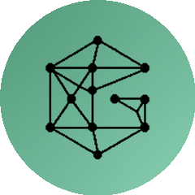

今日单日涨星王
1077
★
单日破千 · 领跑全网
开源版剪映 杀入榜单
| 00| 25| 50| 75| 99
#01
视频剪辑工具
免费剪视频
OpenCut-app / OpenCut

开源的剪映替代视频编辑器
66,179
★
+1,077 今日
开源免费
浏览器即用
不充会员
一天涨一千零七十七颗星，开发者用脚投票
100m80m60m40m20m
#02
知识图谱技能 · 开发者向
给项目建知识图谱
Graphify-Labs / graphify

代码加数据库加基础设施，装进一张能问答的图
84,637
★
+1,028 今日
项目变图谱
能问答
开发者向
把整个项目变成一张能问答的图
#03
AI 应用合集 · 总星最高
百款 AI 应用直接跑
Shubhamsaboo / awesome-llm-apps

一百多个能直接运行的 AI 应用，克隆定制上线
119,554
★
+1,006 今日
百款应用
直接能跑
可定制
总星十一万九千，今天又涨一千
#04 去AI味设计
CSS
Nutlope /
hallmark
反 AI 味的设计技能，专治套路化设计
5,097
★
+802 今日
·
#05 健身动作库
HTML
hasaneyldrm /
exercises-dataset
一千三百多个健身动作数据集，含动画与肌群数据
12,586
★
+435 今日
#06
PowerShell
Raphire / Win11Debloat
Windows 瘦身去预装
轻量脚本，卸载预装应用、关闭遥测，普通用户都能用
50,830
★
这几个你最想 试哪个
关注我 · 下期见